Salon OM · Option 2.2 · reference page
Real screens from products that solve the same jobs (arrive, see the visit, trust, the offer, act), grouped by the visitor's steps. The design stays 2.2; the references shape the order and the sections each version uses.
1 · Arrive: the first screen
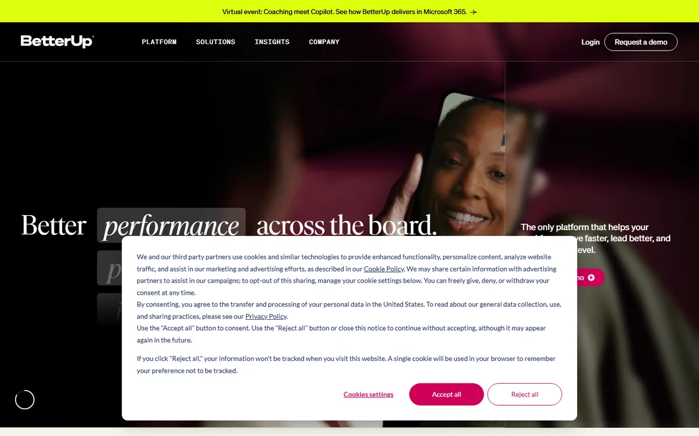
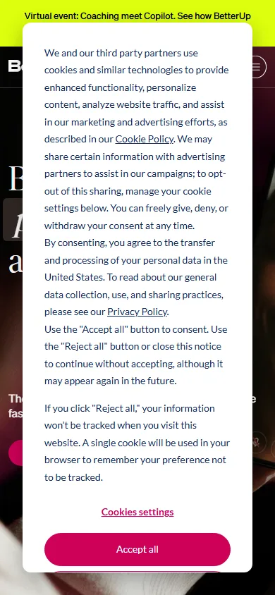
BetterUp · https://www.betterup.com/
A dark, calm hero with one promise and one filled button; the second action is a quiet link. G and S: "Book your visit" filled, "Inner Work with Maggie" ghost.
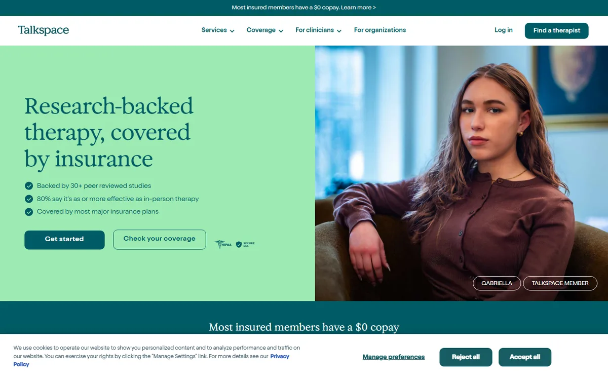
Talkspace · https://www.talkspace.com/
The proof sits right under the hook ("Research-backed therapy, covered by insurance"). G and S: the study's proof line in the first screen.
2 · See the whole visit before the steps
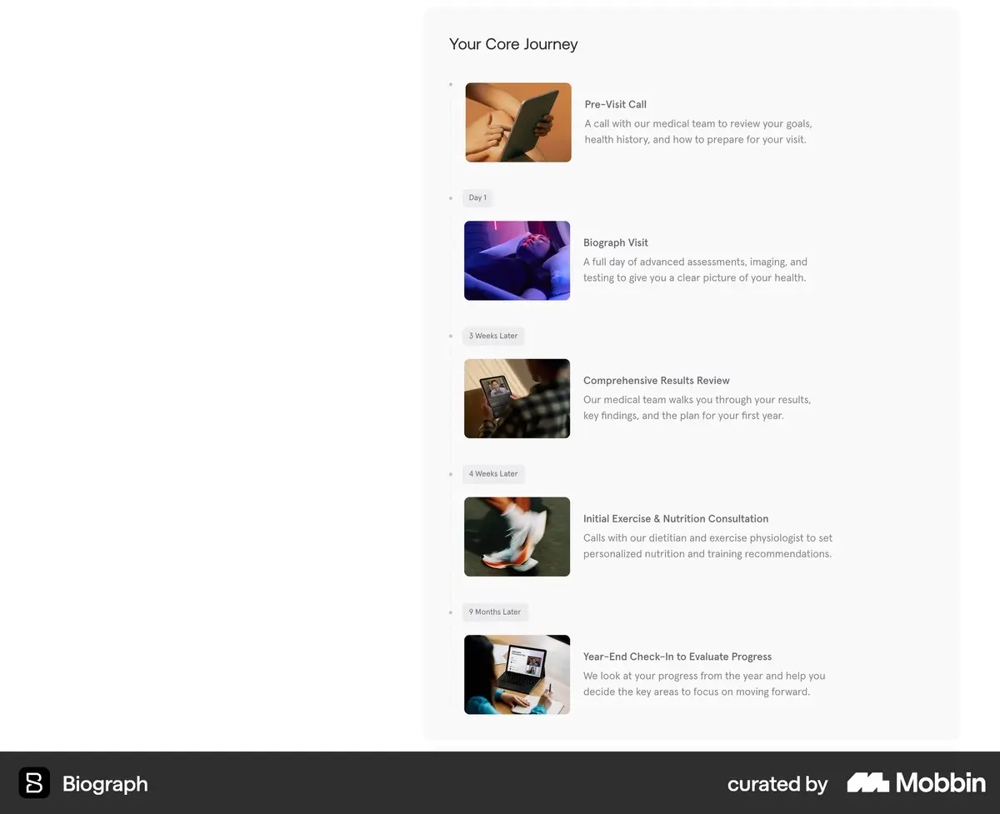
Biograph (Mobbin) · https://mobbin.com/sites/sections/12e6b86f-2523-4ad6-872b-47cecd653f28
"Your Core Journey": numbered stops on one line with a photo each. G: the five-step preview, which leaves into the step rail.
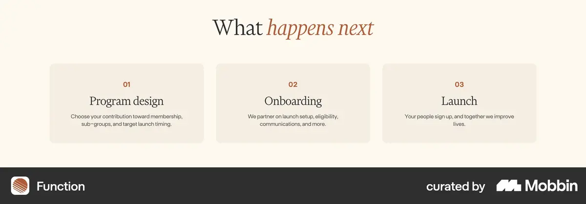
Function (Mobbin) · https://mobbin.com/sites/sections/8fd46d14-3db8-41b8-9dec-ed170e1118b6
"What happens next" in three calm numbered cards. S: the whole visit as one screen of five.
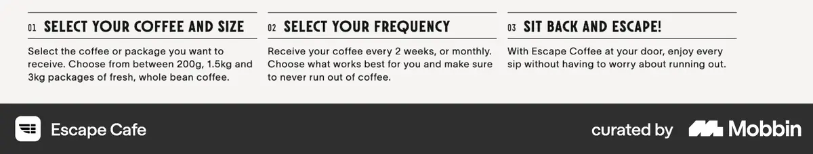
Escape Cafe (Mobbin) · https://mobbin.com/sites/sections/68d54554-65f5-4fd2-a974-c30e7c9eaffc
Numbered steps as one row, a line each. The Inner Work path: four steps in a row with the pricing line under them.
3 · Trust: the people and the proof
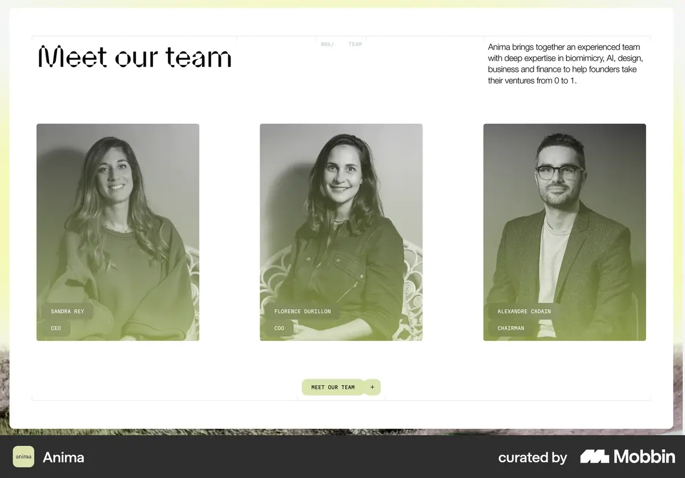
Anima (Mobbin) · https://mobbin.com/sites/sections/5151f1c7-7ebf-429b-97c4-299719e57b48
"Meet our team": large portraits, name and role, nothing else. M and G: Maggie's letter layout with Katie and Chesney signed in below.
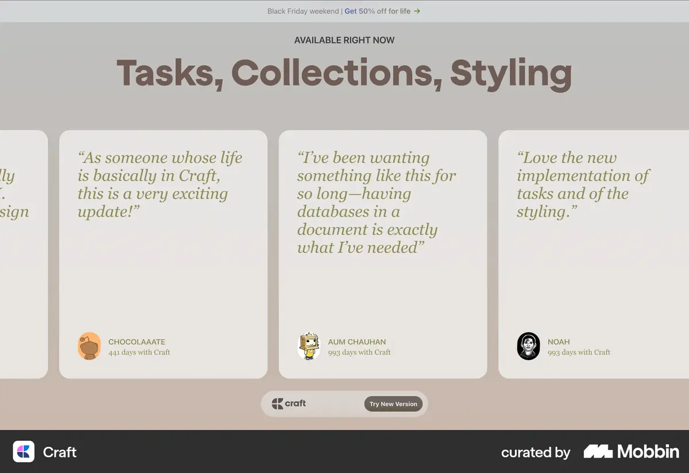
Craft (Mobbin) · https://mobbin.com/sites/sections/27893108-c769-431b-ad8e-b141b4b27c76
Big italic quotes with initials and context. G and S: guest words in the serif italic, initials only (Maggie's rule).
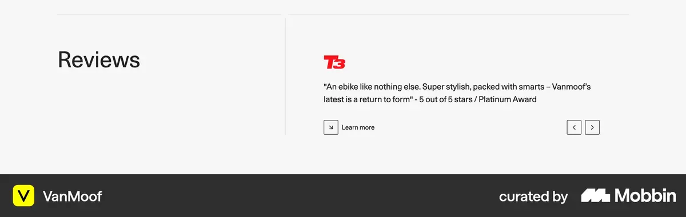
VanMoof (Mobbin) · https://mobbin.com/sites/sections/e7517a67-32f9-413d-98ca-742b6bdd0206
One quote at a time, quiet controls. 2.2's Voices already does this; G adds "Book your visit" under it.
4 · The offer: services and prices
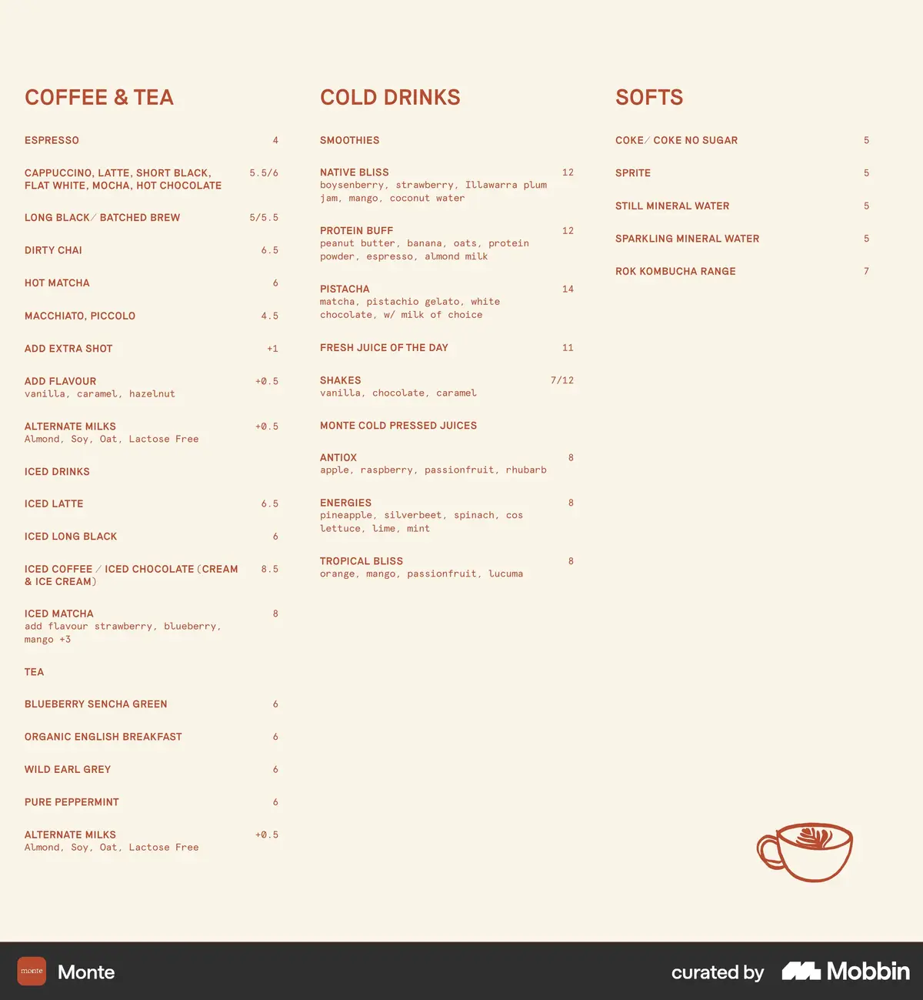
Monte (Mobbin) · https://mobbin.com/sites/sections/9cea9d4c-5557-44cf-97e4-41d7d086df12
A menu set like a printed menu: name, a short line, the price on the right. All three: Maggie's six services with triplets and prices in 2.2's quiet menu.
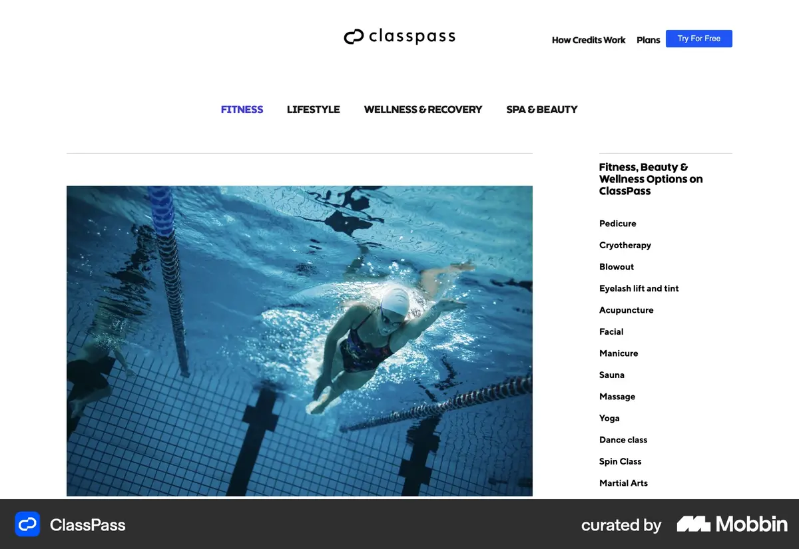
ClassPass (Mobbin) · https://mobbin.com/sites/sections/76254648-1940-4409-b392-09a2361482e7
A photo beside a list of services that changes with the row. Kept from 2.2: the photo beside the menu changes with the open service.
5 · The deeper door and the path (Inner Work)
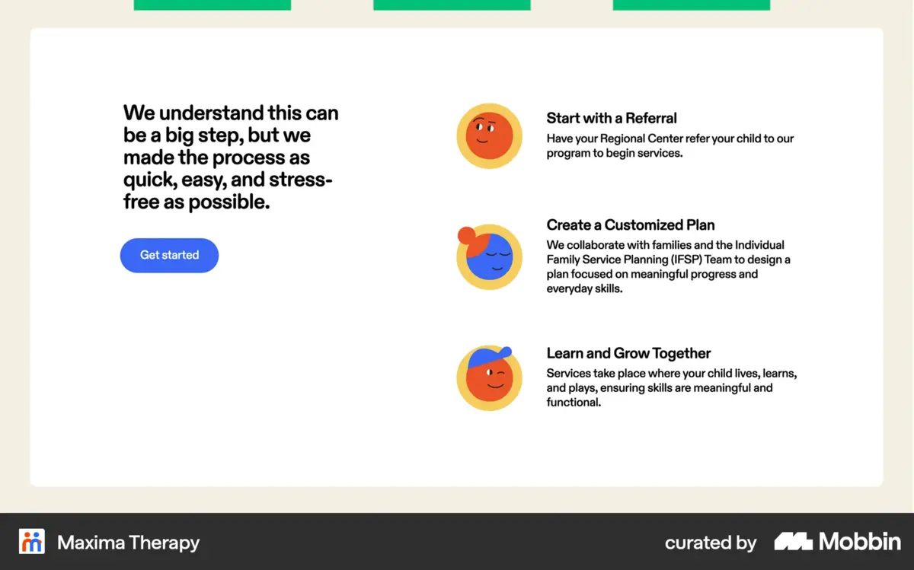
Maxima Therapy (Mobbin) · https://mobbin.com/sites/sections/975a61f8-c018-4d2f-8511-a62d89f9885b
"We understand this can be a big step": reassurance beside three steps and one button. The Inner Work path and its Connection Call.
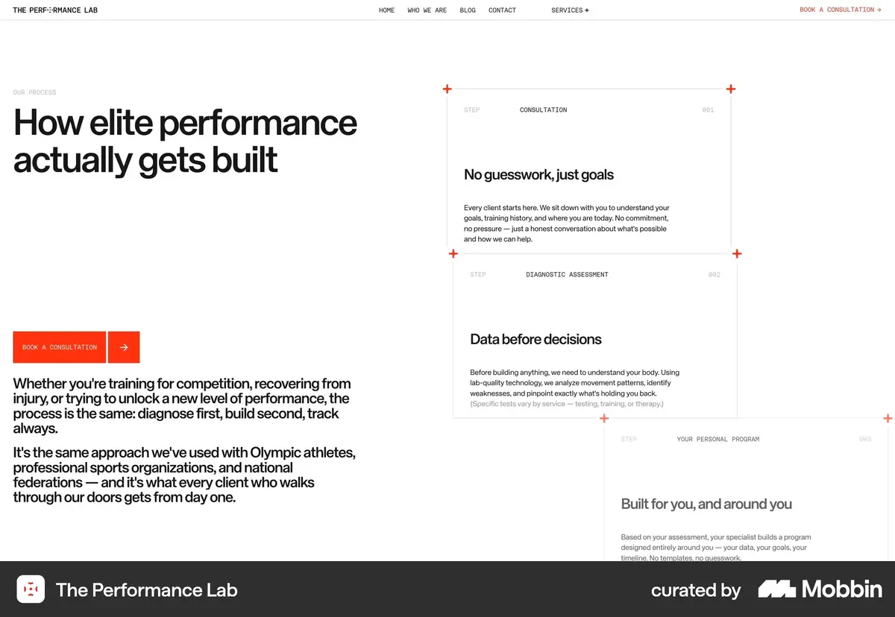
The Performance Lab (Mobbin) · https://mobbin.com/sites/sections/6478449d-7cb6-4686-9294-d44c0912ace0
Long, serious text on the left, the process on the right. Inner Work's "Look a little deeper" and "How we work together": heading left, Maggie's words right.
6 · Act: one action, the same words
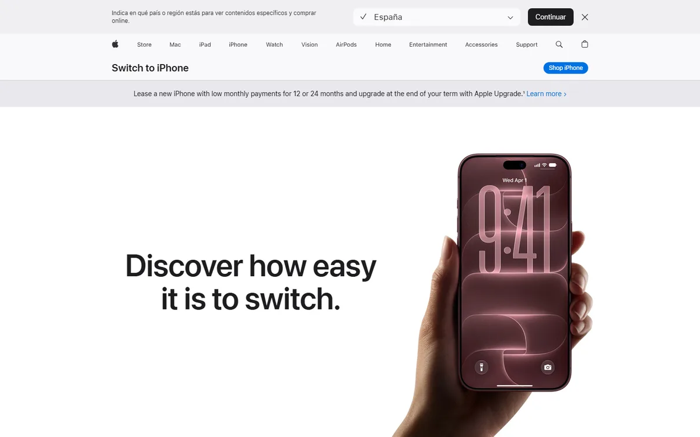
Apple, Switch to iPhone · https://www.apple.com/iphone/switch/
A long page that repeats one action in the same words where each section pays off. G: "Book your visit" after the steps, Why Aveda, Voices, the menu and Begin, never after a story beat.
The proposal, screen by screen
| M · Maggie's order | G · Guided | S · Short | |
|---|---|---|---|
| First screen | Her locked first screen, two equal doors | + the proof line, "Book your visit" first (BetterUp, Talkspace) | as G |
| The visit | The pause, OM, then five step screens in her words | The pause, the five-step preview (Biograph), five steps with one benefit line each | One screen of five (Function) |
| Trust | Why Aveda, the team, the menu, then Voices (her order) | Why Aveda with facts, the team, Voices, then the menu (proof before price) | Team + two quotes + one Aveda line on one screen (Anima, Craft) |
| Offer | Her six services, triplets and prices in 2.2's menu (Monte, ClassPass) | ||
| Inner Work | Her opening, Look a little deeper, How we work together, credentials, the path | + short credentials under the opening, a Connection Call after the practices and on the path (Maxima) | Five screens: opening, the first and last of "Look a little deeper", the six practices, the path, Begin |
| Action | Header, bottom anchor, Begin | + after each cycle's reward, same words every time (Apple Switch) | |
Drybar and Aesop were also chosen, but both sit behind a bot check and could not be captured. Mobbin screens are its curated captures of each site.